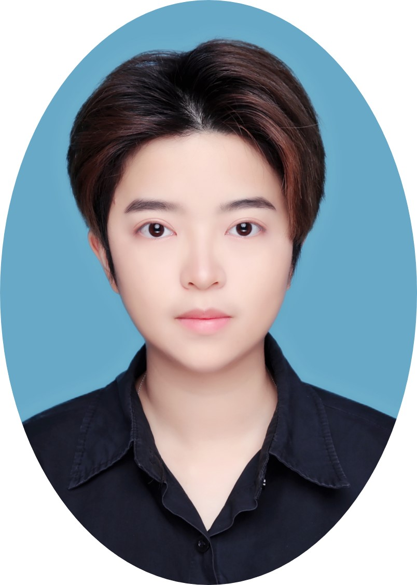

Wanjun Zhong (钟宛君)
About Me
I am a research scientist at Huawei Noah’s Ark Lab. I was awarded as Huawei TopMinds (华为天才少年) in 2023. I received my Ph.D. degree from the School of Computer Science and Engineering in Sun Yat-sen University (SYSU), a member of joint Ph.D. program between SYSU and Microsoft Research Asia (MSRA). I am advised by Dr. Ming Zhou, Prof. Jian Yin and Prof. Jiahai Wang. I am a research intern in the Natural Language Computing Group of MSRA, and my mentor is Dr. Nan Duan.
Research Interests
- Natural Language Processing
- Machine Reasoning
- Question Answering
- Knowledge Computing
Educations
- 08/2018-06/2023, Sun Yat-Sen University
PhD in Computer Science and Technology (Expected June 2023)
Joint Ph.D. Program with Microsoft Research Asia - 08/2014-07/2018, Sun Yat-Sen University
B.S. in Software Engineering
Publications
-
CONE: An Efficient COarse-to-fiNE Alignment Framework for Long Video Temporal Grounding ACL, 2023
Zhijian Hou*, Wanjun Zhong*, Leiji, Kun Yan, Difei Gao, Wing-Kwong Chan, Chong-Wah Ngo, Zheng Shou, Nan Duan. (* indicates equal contribution) [paper] -
Disentangling Reasoning Capabilities from Language Models with Compositional Reasoning Transformers ACL, 2022
Wanjun Zhong*, Tingting Ma*, Jiahai Wang, Jian Yin, Tiejun Zhao, Chin-Yew Lin and Nan Duan. (* indicates equal contribution) [paper] -
Semantic Composition and Alignment with Cross-Modality-Aware Syntactic Hypergraph Convolutional Network for Video Question Answering ICME, 2023
Zenan Xu*, Wanjun Zhong* , Qinliang Su, Zijing Ou, Fuwei Zhang (* indicates equal contribution) [paper]
An Efficient COarse-to-fiNE Alignment Framework @ Ego4D Natural Language Queries Challenge 2022 ECCV Challenge, 2022 -
Mixed-modality Representation Learning and Pre-training for Joint Table-and-Text Retrieval in OpenQA EMNLP, 2022
JunJie Huang, Wanjun Zhong*, Qian Liu, Ming Gong, Daxin Jiang and Nan Duan. (* indicates equal contribution) [paper][data and code] -
LogiGAN: Learning Logical Reasoning via Adversarial Pre-training NeurIPS, 2022
Xinyu Pi*, Wanjun Zhong*, Yan Gao, Jian-guang Lou and Nan Duan. (* indicates equal contribution) [paper][data and code] -
Reasoning over Hybrid Chain for Table-and-Text Open Domain Question Answering IJCAI Oral, 2022
Wanjun Zhong*, Junjie Huang*, Qian Liu, Ming Zhou, Jiahai Wang, Jian Yin and Nan Duan [paper][data and code] -
ProQA: Structural Prompt-based Pre-training for Unified Question Answering NAACL, 2022
Wanjun Zhong*, Yifan Gao, Ning Ding, Yujia Qin, Zhiyuan Liu, Ming Zhou, Jiahai Wang, Jian Yin and Nan Duan. (* indicates equal contribution) [paper][data and code] -
From LSAT: The Progress and Challenges of Complex Reasoning TASLP, 2022
Siyuan Wang, Zhongkun Liu, Wanjun Zhong, Ming Zhou, Zhongyu Wei, Zhumin Chen and Nan Duan [paper] -
Analytical Reasoning of Text. NAACL, 2022
Wanjun Zhong, Siyuan Wang, Duyu Tang, Zenan Xu, Daya Guo, Jiahai Wang, Jian Yin, Ming Zhou and Nan Duan [paper][data and code] -
Logic-Driven Context Extension and Data Augmentation for Logical Reasoning of Text. ACL, 2022
Siyuan Wang, Wanjun Zhong, Duyu Tang, Zhongyu Wei, Zhihao Fan, Daxin Jiang, Ming Zhou and Nan Duan. [paper][code] -
WhiteningBERT: An Easy Unsupervised Sentence Embedding Approach. EMNLP, 2021
Junjie Huang, Duyu Tang, Wanjun Zhong, Shuai Lu, Linjun Shou, Ming Gong, Daxin Jiang and Nan Duan. [paper] -
UserAdapter: Few-Shot User Learning in Sentiment Analysis. ACL, 2021
Wanjun Zhong, Duyu Tang, Jiahai Wang, Jian Yin and Nan Duan. [paper] -
Syntax-Enhanced Pre-trained Model. ACL, 2021
Zenan Xu, Daya Guo, Duyu Tang, Qinliang Su, Linjun Shou, Ming Gong, Wanjun Zhong, Xiaojun Quan, Daxin Jiang and Nan Duan. [paper] -
Compare to The Knowledge: Graph Neural Fake News Detection with External Knowledge. ACL, 2021
Linmei Hu, Tianchi Yang, Luhao Zhang, Wanjun Zhong, Duyu Tang, Chuan Shi, Nan Duan and Ming Zhou. -
Neural Deepfake Detection with Factual Structure of Text. EMNLP Oral, 2020
Wanjun Zhong, Duyu Tang, Zenan Xu, Ruize Wang, Nan Duan, Ming Zhou, Jiahai Wang and Jian Yin. [paper][video] -
Leveraging declarative knowledge in text and first-order logic for fine-grained propaganda detection. EMNLP, 2020
Ruize Wang, Duyu Tang, Nan Duan, Wanjun Zhong, Zhongyu Wei, Xuanjing Huang, Daxin Jiang and Ming Zhou. [paper] -
LogicalFactChecker: Leveraging Logical Operations for Fact Checking with Graph Module Network. ACL, 2020
Wanjun Zhong, Duyu Tang, Zhangyin Feng, Nan Duan, Ming Zhou, Ming Gong, Linjun Shou, Daxin Jiang, Jiahai Wang and Jian Yin. [paper][video] -
Reasoning Over Semantic-Level Graph for Fact Checking. ACL, 2020
Wanjun Zhong, Jingjing Xu, Duyu Tang, Zenan Xu, Nan Duan, Ming Zhou, Jiahai Wang and Jian Yin. [paper] [video] -
Improving Question Answering by Commonsense-Based Pre-Training. NLPCC, 2019
Wanjun Zhong, Duyu Tang, Nan Duan, Ming Zhou, Jiahai Wang, Jian Yin. [paper]
Zhijian Hou*, Wanjun Zhong*, Leiji, Kun Yan, Difei Gao, Wing-Kwong Chan, Chong-Wah Ngo, Zheng Shou, Nan Duan. (* indicates equal contribution) [paper][data and code]
Preprints
-
A Heterogeneous Graph with Factual, Temporal and Logical Knowledge for Question Answering Over Dynamic Contexts. arxiv, 2020
Wanjun Zhong, Duyu Tang, Nan Duan, Ming Zhou, Jiahai Wang and Jian Yin [paper] -
Improving Task Generalization via Unified Schema Prompt arxiv, 2022
Wanjun Zhong, Yifan Gao, Ning Ding, Zhiyuan Liu, Ming Zhou, Jiahai Wang, Jian Yin and Nan Duan. [paper] -
MemoryBank: Enhancing Large Language Models with Long-Term Memory arxiv, 2023
Wanjun Zhong, Lianghong Guo, Qiqi Gao, He Ye, Yanlin Wang [paper] -
AGIEval: A Human-Centric Benchmark for Evaluating Foundation Models arxiv, 2023
Wanjun Zhong, Ruixiang Cui, Yiduo Guo, Yaobo Liang, Shuai Lu, Yanlin Wang, Amin Saied, Weizhu Chen, Nan Duan [paper]
Honors & Awards
- Champion of CVPR 2023 Ego4D Challenge for Episodic Memory Natural Language Queries
- 3rd of ECCV 2022 Ego4D Challenge for Episodic Memory Natural Language Queries
- National Second Prize of 2016 China College Students Data Modeling Contest
- Merit Awards of 2018 Global Artificial Intelligence Application Competition
- Rank 3rd, 7th in the quarter-finals of the 2018 FASHIONAI GLOBAL CHALLENGE
- 华为天才少年 (Huawei TopMinds), 2023
- Microsoft Research Fellowship, 2021 (11 outstanding Ph.D. students in computer science in the Asia-Pacific region)
- Baidu Scholarship (Global Top 40), 2021
- National Scholarship of Ph.D., 2020
- The First Prize Scholarship, 2016
- The Second Prize Scholarship, 2017, 2018, 2019, 2020
- Individual Scholarship, 2015
Academic Competition Awards
Scholarship
Experiences
-
Research Intern, Noah's Ark Lab, Huawei, 02/2023-04/2023
Mentor: Dr. Nan Duan -
Research Intern, Natural Language Computing Group, Microsoft Research Asia, 04/2021-02/2023
Mentor: Dr. Nan Duan -
Research Intern, Natural Language Computing Group, Microsoft Research Asia, 04/2019-04/2021
Mentor: Dr. Duyu Tang -
Research Intern, Natural Language Computing Group, Microsoft Research Asia, 07/2017-07/2018
Mentor: Dr. Duyu Tang - Teaching Assistant of two artificial intelligence courses, 2019
- Teaching Assistant of courses: linear algebra and discrete mathematics, 2015
Activities
- Conference Reviewers and PC Members: AAAI, EMNLP, ACL (PC Member), ACL, NAACL
- AI考公考编指日可待！微软华人团队发布全新基准AGIEval，专为人类考试而生
- MLNLP第十三次学术研讨会开始报名｜香港科技大学、京东智能城市研究院、中山大学、蒙特利尔大学知名学者重磅来袭！
- 实习派 | 钟宛君：从“七次拒稿”到“微软学者”，在科研挑战中成长
- 全亚洲11人获奖，中大占了俩！来听听“学霸”怎么做到的~
- 2021 年“微软学者”奖学金全亚洲 11 人名单公布！
- 逻辑推理新高度：微软AI模型在这张榜单上刷新了人类纪录
- 机器推理在事实检测任务中的应用
- ACL 2020 | 微软亚洲研究院精选论文带你一览NLP前沿！
- 《预训练周刊》第5期：智源等研究力证：GPT语言理解能力不输BERT、盘点NLP预训练 [兵器谱]
- Rank 3rd, 7th in the quarter-finals of the 2018 FASHIONAI GLOBAL CHALLENGE